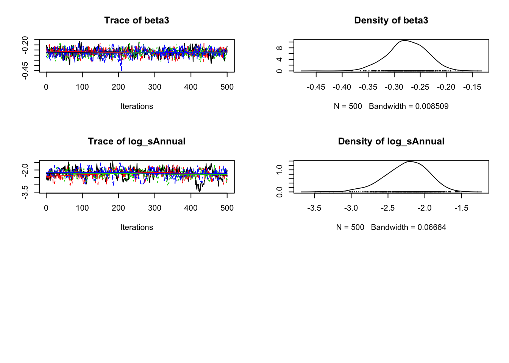
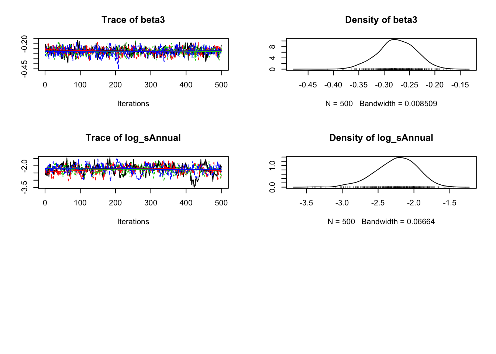
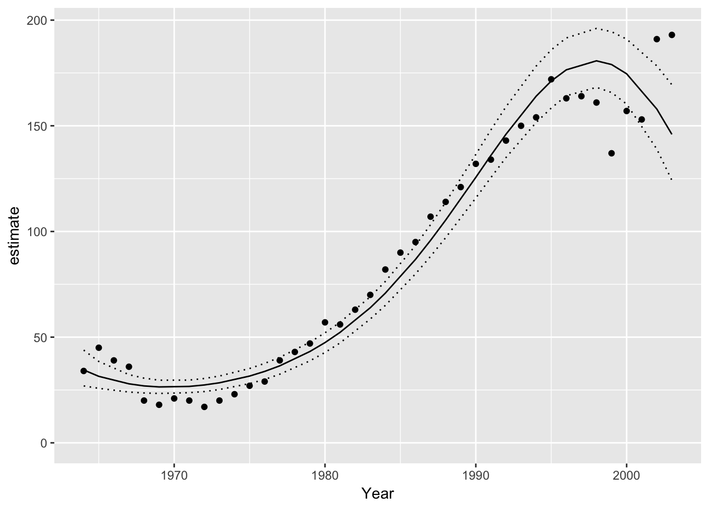

smbr
Introduction
smbr (pronounced simber) is an R package to facilitate analyses using STAN. It is part of the mbr family of packages.
Demonstration
# define model in Stan language
model <- model("
data {
int nAnnual;
int nObs;
int Annual[nObs];
int Pairs[nObs];
real Year[nObs];
}
parameters {
vector[nAnnual] bAnnual;
real log_sAnnual;
real alpha;
real beta1;
real beta2;
real beta3;
}
transformed parameters {
real sAnnual;
sAnnual = exp(log_sAnnual);
}
model {
vector[nObs] ePairs;
log_sAnnual ~ normal(0, 10);
bAnnual ~ normal(0, sAnnual);
alpha ~ normal(0, 10);
beta1 ~ normal(0, 10);
beta2 ~ normal(0, 10);
beta3 ~ normal(0, 10);
for (i in 1:nObs) {
ePairs[i] = exp(alpha + beta1 * Year[i] + beta2 * Year[i]^2 +
beta3 * Year[i]^3 + bAnnual[Annual[i]]);
}
target += poisson_lpmf(Pairs | ePairs);
}")
# add R code to calculate derived parameters
model %<>% update_model(new_expr = "
for (i in 1:length(Pairs)) {
prediction[i] <- exp(alpha + beta1 * Year[i] + beta2 * Year[i]^2 +
beta3 * Year[i]^3 + bAnnual[Annual[i]])
}
")
# define data types and center year
model %<>% update_model(
select_data = list("Pairs" = integer(), "Year*" = integer(),
Annual = factor()),
derived = "sAnnual",
random_effects = list(bAnnual = "Annual"))
data <- bauw::peregrine
data$Annual <- factor(data$Year)
set.seed(42)
# analyse
analysis <- analyse(model, data = data, seed = 3L, glance = FALSE)
# coefficient table
coef(analysis)
#> # A tibble: 5 x 7
#> term estimate sd zscore lower upper pvalue
#> * <S3: term> <dbl> <dbl> <dbl> <dbl> <dbl> <dbl>
#> 1 alpha 4.26 0.0408 104 4.18 4.34 0.000300
#> 2 beta1 1.19 0.0744 16.0 1.06 1.35 0.000300
#> 3 beta2 -0.0182 0.0305 - 0.579 -0.0762 0.0420 0.543
#> 4 beta3 -0.272 0.0378 - 7.23 -0.350 -0.204 0.000300
#> 5 log_sAnnual -2.22 0.322 - 7.02 -3.07 -1.73 0.000300
# trace plots
plot(analysis) 

# make predictions by varying year with other predictors including the random effect of Annual held constant
year <- predict(analysis, new_data = "Year")
# plot those predictions
ggplot(data = year, aes(x = Year, y = estimate)) +
geom_point(data = bauw::peregrine, aes(y = Pairs)) +
geom_line() +
geom_line(aes(y = lower), linetype = "dotted") +
geom_line(aes(y = upper), linetype = "dotted") +
expand_limits(y = 0)
Installation
Contribution
Please report any issues.
Pull requests are always welcome.
Please note that this project is released with a Contributor Code of Conduct. By participating in this project you agree to abide by its terms.